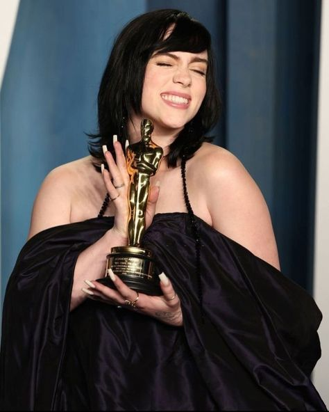

cantora norte-americana Billie Eilish recebeu, desde o início de sua carreira, 78 prêmios e 203 indicações sendo eles: 9 Grammy Awards, 2 American Music Awards, 3 MTV Europe Music Awards, 3 BRIT Award, 6 MTV Video Music Awards, 3 Billboard Music Awards, 2 Oscar e 2 Prêmios Globo de Ouro. Além disso, recebeu 18 prêmios do Guinness World Records durante a carreira. Em 2019, Eilish e seu primeiro álbum de estúdio receberem 6 nomeações ao Grammy Awards, sendo elas Artista Revelação, Álbum do Ano, Melhor Álbum de Pop, Gravação do Ano, Canção do Ano e Melhor Performance Solo de Pop, vencendo em 5 das 6 indicações. As vitórias em "Álbum do Ano", "Gravação do Ano", "Canção do Ano" e "Revelação do Ano" a classificam como a segunda pessoa a conseguir os quatro prêmios em uma noite, a primeira mulher e a mais jovem da história. Aos dezessete anos, Eilish tornou-se a artista mais jovem a ser indicada nas quatro categorias principais da premiação. Com apenas dezoito anos, ao vencer nas 5 categorias no Grammy Awards de 2020, tornou-se a primeira artista mais jovem a ser indicada a categoria de Álbum do Ano. Em setembro de 2020, Eilish venceu mais 4 de 8 indicações no iHeartradio Music Awards; sendo eles: Album do ano, Artista Feminiana no Ano, Artista de Rock Alternativo do ano, Melhor Música de Rock Alternativo do Ano "Bad Guy".
No Grammy Awards de 2021 Eilish venceu 2 de suas 4 indicações, uma delas como Melhor Canção Escrita para Mídia Visual, com "No Time to Die", música-tema de James Bond, que a fez como a artista mais jovem da história a gravar uma música-tema de James Bond, pelo qual venceu o Oscar.
No Grammy Awards de 2024 Eilish foi indicada em 6 categorias, vencendo as seguintes categorias: Canção do Ano e Melhor Canção Composta para Mídia Visual, com sua canção "What Was I Made For?", gravada para Barbie: The Album, trilha sonora do filme Barbie (2023)
No Oscar 2024 Billie ganhou seu segundo Oscar na categoria Melhor Música Original com sua canção "What Was I Made For?", se tornando a artista mais jovem a ganhar dois Oscars nessa categoria.
